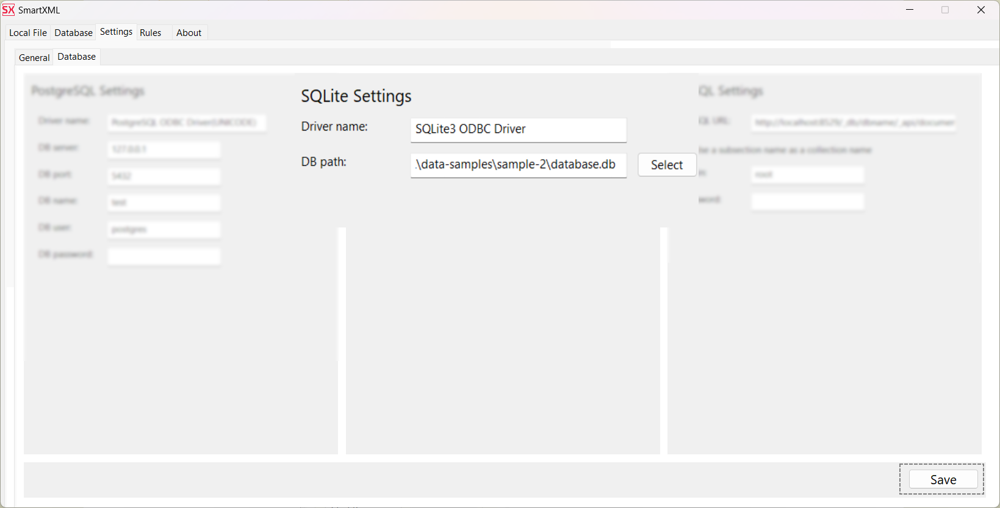
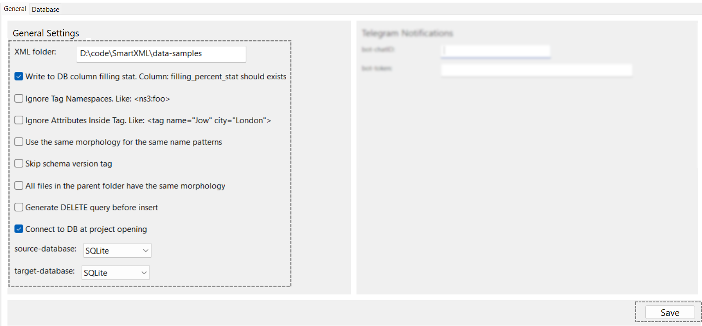
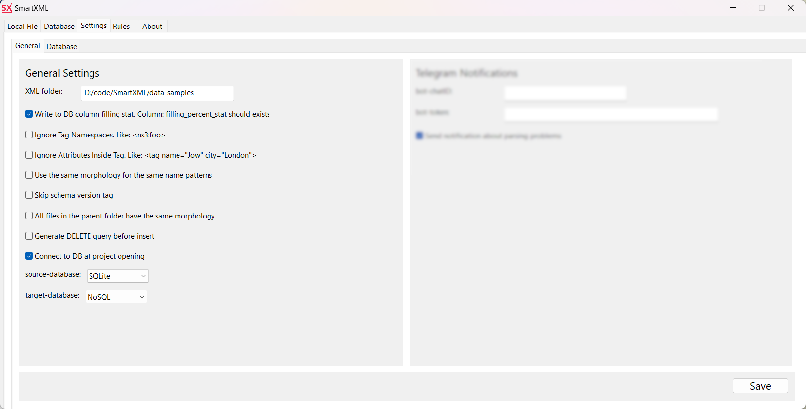
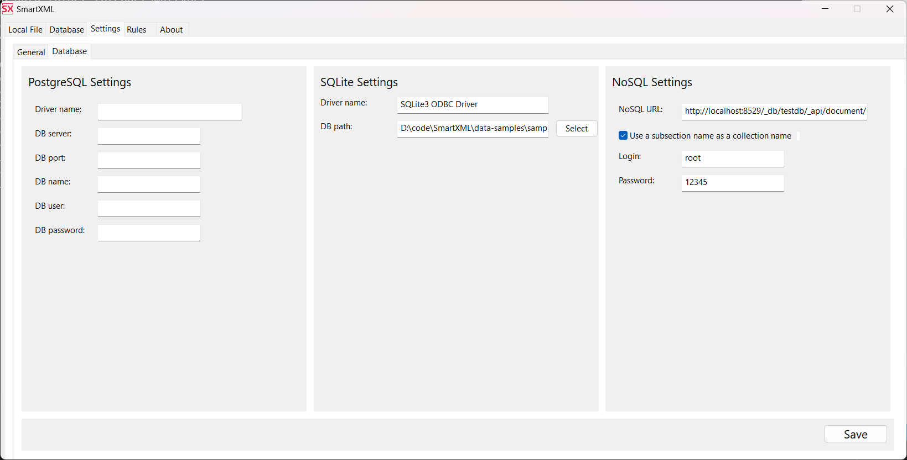

Database connection configuration
Configuration for working with relational databases: PostgreSQL/SQLite
-
Install the 32-bit ODBC driver for the used database.
For SQLite, you can download the driver here.
For PostgreSQL, it is recommended to install the ODBC driver through the PostgreSQL Application Stack Builder, which comes with PostgreSQL.
On Linux, use the instructions provided in the archive with the program.
-
You can check the driver's name on Windows by running ODBC Data Sources (32-bit).
On the Drivers tab, make sure that the installed drivers are displayed. Their names may differ from the default names shown in the example. However, they are usually
PostgreSQL ODBC Driver(UNICODE)andSQLite3 ODBC Driver.On Linux, the list of installed ODBC drivers is usually located in /etc/odbcinst.ini.
-
Open your project and on the Settings⮞Database tab, specify the access credentials for the used databases. The example shows the SQLite configuration.
Save the changes by clicking the Save button.
-
Go to the Settings⮞General tab.
If the database stores the full path, leave the XML Folder field empty.
If the database contains a relative path to XML files, specify the missing part of the path.
Example: If your database stores a link to a file relatively like basic-sample/example_1.xml, and the full path to the XML file looks like D:\code\SmartXML\data-samples\basic-sample\example_1.xml, then you need to specify the missing part of the path in this field, namely D:\code\SmartXML\data-samples. After that, SmartXML will concatenate these paths into the full path like D:\code\SmartXML\data-samples\basic-sample\example_1.xml.
If necessary, enable the collection of statistics on the filling of parsed files (Write to DB column filling stat).
Make sure the Connect to DB at project opening checkbox is checked.
Set the Source Database and Target Database parameters to
SQLite.Save the changes by clicking the Save button.
Be sure to restart SmartXML and reopen the project. Without this, the connection to the database will not be established.
Configuration for Working with NoSQL Databases
-
Make sure that your database supports operation via http(s) interface.
-
On the Settings⮞General tab, set the Target Database to
NoSQL. -
Go to the Settings⮞Database⮞NoSQL Settings tab and provide the access details: NoSQL URL, login, password.
 localhost- server address8529- port used by your database[db-name]- name of the used database, may differ from the project name[subsection]- collection name, which must match the sub-section name in SmartXMLdocument- type of stored data, specified when creating the collection
Data logical grouping in NoSQL occurs through collections. In SmartXML, each section plays the role of a collection in NoSQL. Most popular databases require the URL for data submission to also include the collection name for insertion.
Ensure that the checkbox Use a subsection name as a collection name is checked.
Now, after parsing each file, it will be sent for insertion to an address with the following structure:
http://localhost:8529/_db/[db-name]/_api/document/[subsection]
Where:
In the project sample_1, the section name is sample. In simple cases, the sub-section name can match the section name, and it does not matter.
So, the correct NoSQL URL would be:
http://localhost:8529/_db/testdb/_api/document/
And the data will be sent to the address:
http://localhost:8529/_db/testdb/_api/document/sample
Configuring NoSQL Using ArangoDB as an Example
Create a new database in ArangoDB
Specify the name of the new database
Switch to the new database, never use the system one
Select the created database

Add a new collection
Specify the name of the new collection. The name should match the names of sections in the project
After completing these steps, the NoSQL database is ready to load data.